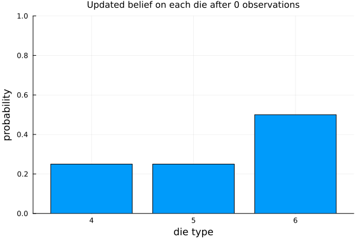
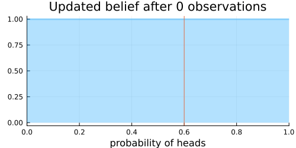
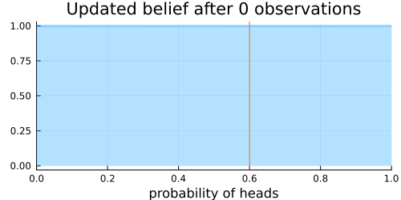
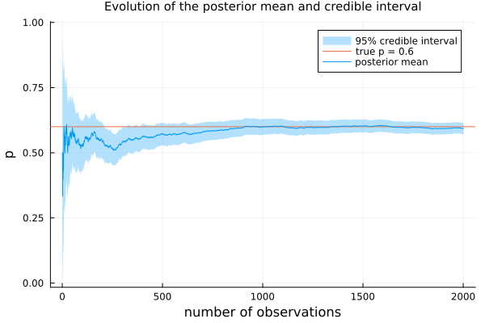
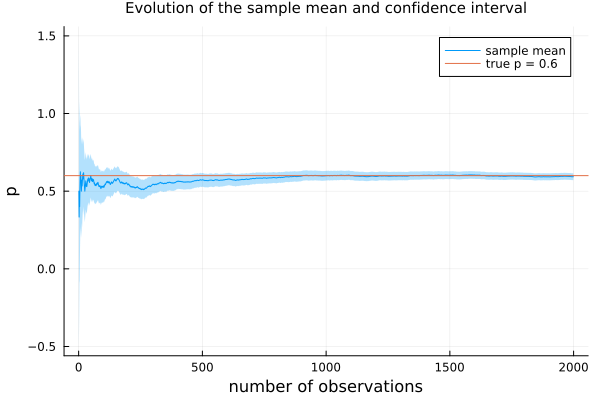
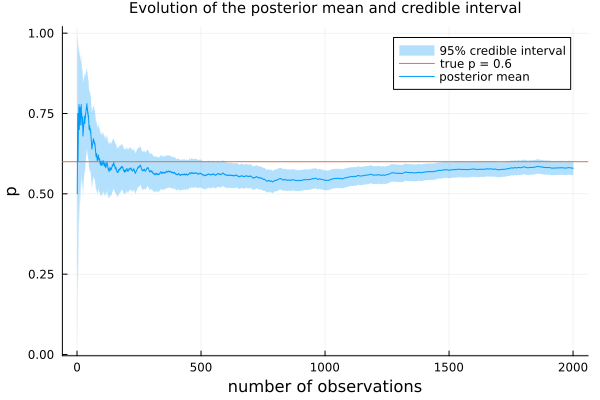
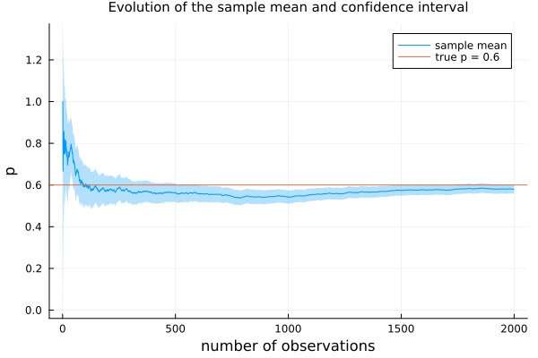

Bayesian inference
In many situations, we expect some random variable to follow a given distribution but it is not certain what parameters actually define the distribution. For instance, we may have a coin that might be biased but we are unsure about how biased it is. Or we may expect some feature of a population to follow a normal distribution but it is not clear what are its mean and/or standard deviation. In those cases, it is useful to treat those parameters as random variables themselves, leading to what is known as a compound distribution.
Then, given a certain feature and a model, we may attempt to fit the model to the available data, which is refereed to a statistical inference problem. We are particularly interested here in Bayesian inference, which amounts to using Bayes' formula in the inference process, by updating a prior knowledge of the distribution according to the evidence given by the data.
In loose terms, suppose a compound distribution model has a parameter $\theta$, and we initially believe in a certain prior distribution $p(\theta)$ for this parameter. We then observe some data, or evidence, $E$, and update our belief according to Bayes' formula,
\[ p(\theta | E) = \frac{p(E | \theta) p(\theta)}{p(E)}.\]
After updating, the posterior $p(\theta | E)$ may indicate better the most likely values for the parameter $\theta$.
Bayesian inference on defect item
The Bayesian inference on defect item is an example of Bayesian inference. One wants to infer which die was picked by their friend, based on the results of throwing the die a few times. In this case, we have a compound distributions, starting with a categorial distribution with the three categories $D_4$, $D_5$, $D_6$, representing each type of die, with probabilities $1/4$, $1/4$, and $1/2$, respectively, and then, for each category $D_i$, we have the probabilities $p(j|D_i)$ of obtaining each number $j=1, \ldots, 6$, with each die type $D_i$, $i = 4, 5, 6$.
After a number of throws resulting in a sequence $E = (3, 1, 4, 5, 1, 5, 2, 5)$ of events, we want to know the posterior $p(D_i|E)$, revealing the most likely die picked in the beginning of the problem.
The following animation illustrates the evolution of our belief on the picked die as the die is thrown, along the sequence of events $E$.
A biased coin
The previous example illustrates the case of a finite number of choices for the parameter, namely $D_5$, $D_5$, $D_6$. More often than not, the parameter belongs to a continuum, in either a finite- or infinite-dimensional space.
Indeed, let's suppose we are told a coin is biased but we don't know its bias and don't even know whether it is biased towards heads or tails. We let $X$ be the random variable with the result of tossing the coin, which follows a Bernoulli distribution with say probability $\theta$ of assuming the value 1, representing heads, and $1-\theta$ of assuming the value 0, representing tails. Thus,
\[ X \sim \mathrm{Bernoulli}(\theta).\]
The bias $\theta$ may assume any value between 0 and 1, so we consider it as a random variable denoted $\Theta$. We could assume an uninformative prior, with $\Theta$ uniformly distributed between 0 and 1, or an informative prior, assuming, more likely, just a slight bias, near 1/2. In the first case, we take $\Theta \sim \mathrm{Beta}(1, 1) = \mathrm{Uniform}(0, 1)$, while in the second case, we may assume $\Theta$ to be distributed like $\mathrm{Beta}(n, m)$, with $n, m \gg 1$. In any case, we suppose
\[ \Theta \sim \mathrm{Beta}(\alpha, \beta),\]
for $\alpha, \beta > 0$. Recall the probability distribution function for $\Theta$ is
\[ f_\Theta(\theta) = f_\Theta(\theta; \alpha, \beta) = \frac{\Gamma(\alpha + \beta)}{\Gamma(\alpha)\Gamma(\beta)}\theta^{\alpha - 1}(1 - \theta)^{\beta - 1},\]
where $\Gamma = \Gamma(z)$ is the gamma function.
Now, suppose we toss the coin a number of times and it lands heads $k$ times and tails $m$ times. So this is our evidence $E$. The random variable $X$ is discrete, while $\Theta$ is continuous. The posterior becomes
\[ f_\Theta(\theta | E) = \frac{p(E | \theta) f_\Theta(\theta)}{p(E)}.\]
Since $E$ is heads $k$ times and tails $m$ times, we have $p(E | \theta) \propto \theta^k (1 - \theta)^{m}$. Computing $p(E)$ is usually not a trivial task but in this case can be computed via
\[ \begin{align*} p(E) & = \int_0^1 p(E|\theta)f_\Theta(\theta)\;\mathrm{d}\theta = \left(\begin{matrix} k + m \\ k \end{matrix} \right)\frac{\Gamma(\alpha + \beta)}{\Gamma(\alpha)\Gamma(\beta)}\int_0^1 \theta^k (1 - \theta)^m \theta^{\alpha -1}(1-\theta)^{\beta - 1} \;\mathrm{d}\theta \\ & = \left(\begin{matrix} k + m \\ k \end{matrix} \right)\frac{\Gamma(\alpha + \beta)}{\Gamma(\alpha)\Gamma(\beta)}\frac{\Gamma(\alpha + k)\Gamma(\beta + m)}{\Gamma(\alpha + k + \beta + m)}. \end{align*}\]
But we do not need to compute it in this case. Indeed, up to a constant, we have
\[ p(\theta | E) \propto \theta^k (1 - \theta)^m \theta^{\alpha - 1}(1 - \theta)^{\beta - 1} = \theta^{k + \alpha - 1}(1 - \theta)^{m + \beta - 1} \sim \mathrm{Beta}(\alpha + k, \beta + m).\]
Hence, updating the prior in this case simply amounts to adding the number of heads and the number of tails to the parameters of the beta distribution.
As more and more coins are tossed, we get the expected value of the posterior converging to the actual bias of the coin, with the credible interval narrowing down the uncertainty.
The code below (adapted from Introduction to Turing) exemplifies the increased belief we get with more and more data collected.
We first generate the data drawing from a Bernoulli distribution using the true bias.
using Distributions, StatsPlots
p_true = 0.6
N = 2_000
data = rand(Bernoulli(p_true), N)Next we define an uniformative prior and create a function to update the prior with a given set of data.
prior = Beta(1, 1)
function update_prior(prior::Beta, data::AbstractVector{Bool})
heads = sum(data)
tails = length(data) - heads
posterior = Beta(prior.α + heads, prior.β + tails)
return posterior
endNow we visualize the effect of the size of the data on the posterior.
plt = []
for n in (0, 10, 100, N)
push!(
plt,
plot(
update_prior(prior, view(data, 1:n)),
title = n == 0 ? "Uninformative prior" : "Posterior with $n observations",
)
)
endTo complement that, we show two animations with the posterior being updated as more data is used.
Here is a static view of the evolution of the posterior mean and 95% credible interval.
For the sake of comparison, here is the evolution of the sample mean and the associated 95% confidence intervals, according to the frequentist approach.
The data above has been seeded for reproducibility reasons. For the sake of illustration, here is another set of data, where the 95% intervals fall sometimes a little bit short.
Conjugate distributions
This property that multipling a Bernoulli distribution by a Beta prior yields a Beta posterior is an example of conjugate distributions. Conjugate distributions greatly facilitate the updating process in Bayesian statistics. There are a number of other conjugate prior distributions, as can be seen on this table of conjugate distributions.
But, in general, without conjugate distributions, common in "real-world" problems, updating a prior is a much harder process and requires some fancy computational techniques.